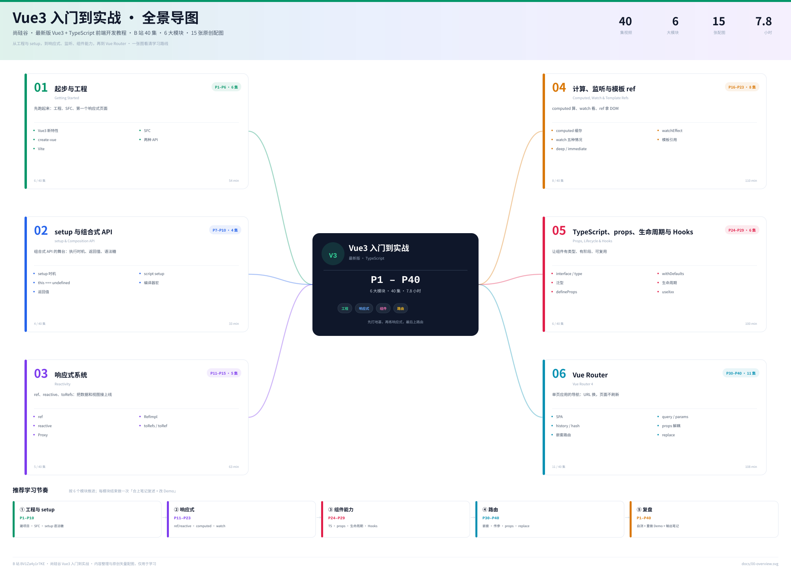

尚硅谷 · Vue3 + TypeScript
Vue3 入门到实战
P1–P40
把 40 集视频整理成 6 个模块：工程与 setup、响应式、计算与监听、组件能力、Vue Router。左脑看结构，右脑看配图。
40
集视频
6
个模块
15
张配图
7.8h
课程时长
0
已学完
学习进度 · 按集勾选
0 / 40
开始学习 ↓
← 知识地图
切换主题
重置进度
40 集
本页的分模块导图、搜索与打勾需要 JavaScript。请启用后再刷新；如果只想看图，可以直接打开
docs/00-overview.svg
。
全景导图
先看森林，再看树木 · 点图放大

复习清单
能不看笔记讲清每一条，再开始做项目。勾选状态同样保存在本机。
没有匹配的集，换个关键词试试。
↑ 顶部
×